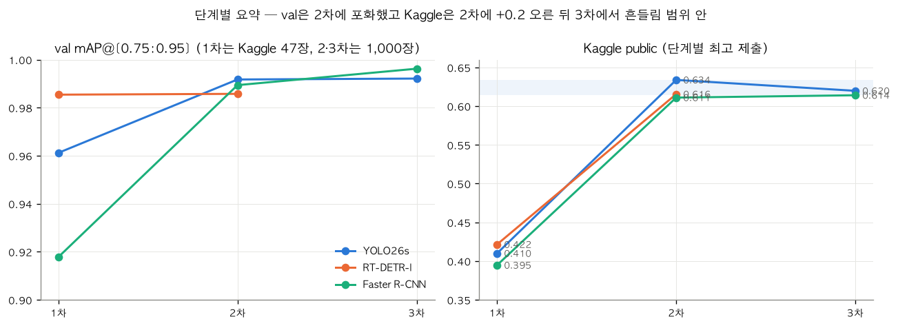

1
/
0
최종 결과 요약
외부 데이터로 Kaggle 점수를 0.42에서 0.63까지 올렸습니다.
0.4215 → 0.6339
Kaggle public 최고 (1차 → 2차)
+0.19~0.20
외부 데이터 보충 효과
public 1위
11/5 09:08 기준
TODO: 최종 public/private 순위
val 0.99 vs 0.61
남은 val·Kaggle 차이
남은 차이는 모델 문제가 아니라
대회 test 정답 쪽일 가능성이 크다
고 판단했습니다.

▦
← →/Space 이동 · N 노트 · Esc 목차
SPEAKER NOTES